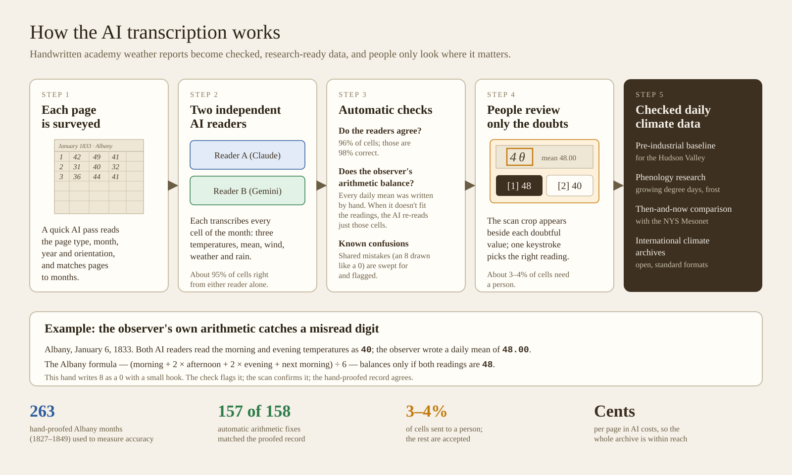

Why this works for these records
- Accuracy is measured, not assumed. Every result is scored cell by cell against 263 months of the Albany Academy record (1827–1849) that were transcribed and proofread by hand.
- The observers check our work. Each daily mean was computed and written by the observer. When a transcribed reading doesn’t fit the observer’s own arithmetic, the AI looks again at just those cells. In the hand-proofed record the arithmetic balances on 99% of days, so a mismatch almost always means a misread digit.
- Two readers are better than one. Two different AI systems read each page independently. Where they agree (about 96% of cells) they are right about 98% of the time; where they disagree, a person decides.
- People spend their time where it counts. About 3–4% of cells go to a reviewer, who sees the handwriting beside each doubtful value. Repeated confusions, like this hand’s 8s that look like 0s, can be corrected in batches.
- It is affordable at scale. The AI costs are a few cents per page, so the full record of daily sheets can be transcribed, not just a sample.
Current results
On 42 held-back Albany months, a single AI reader got about 95% of cells right. Re-reading the cells where the observer’s arithmetic fails raised temperature accuracy to about 97–98% on a separate set of 20 months; confirming that figure on the held-back months is the next step. Automatic corrections from the arithmetic matched the hand-proofed record in 157 of 158 cases.
The output is the transcription of what the observers wrote. Questions about how historical instruments and sites compare with modern ones are handled separately, in the climate analysis.